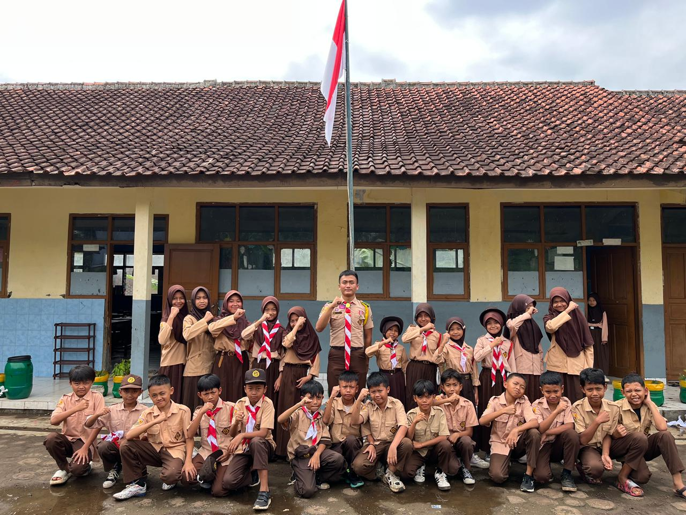
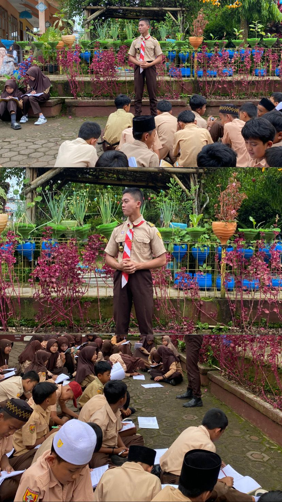
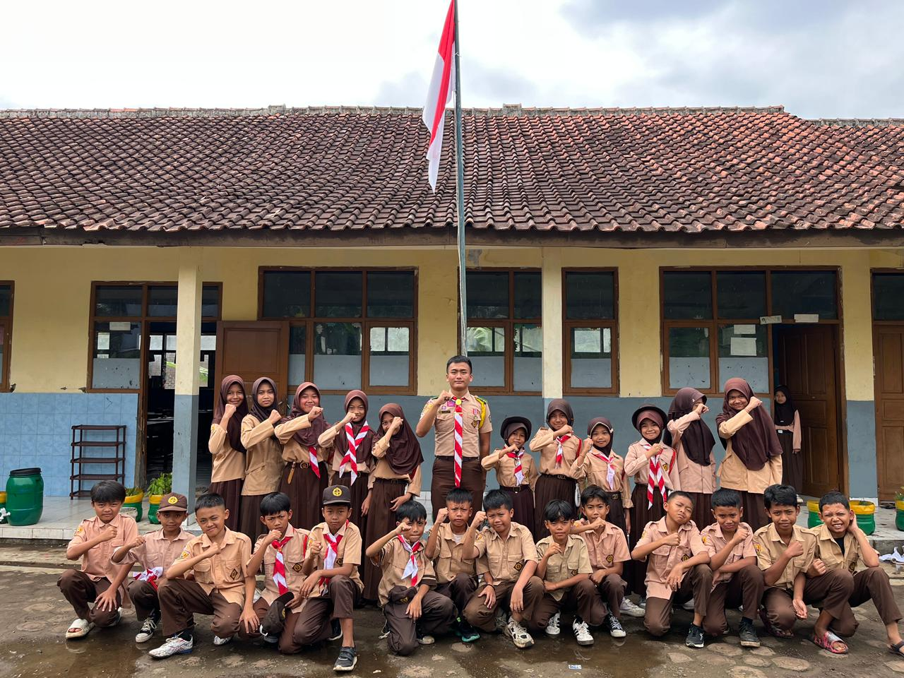
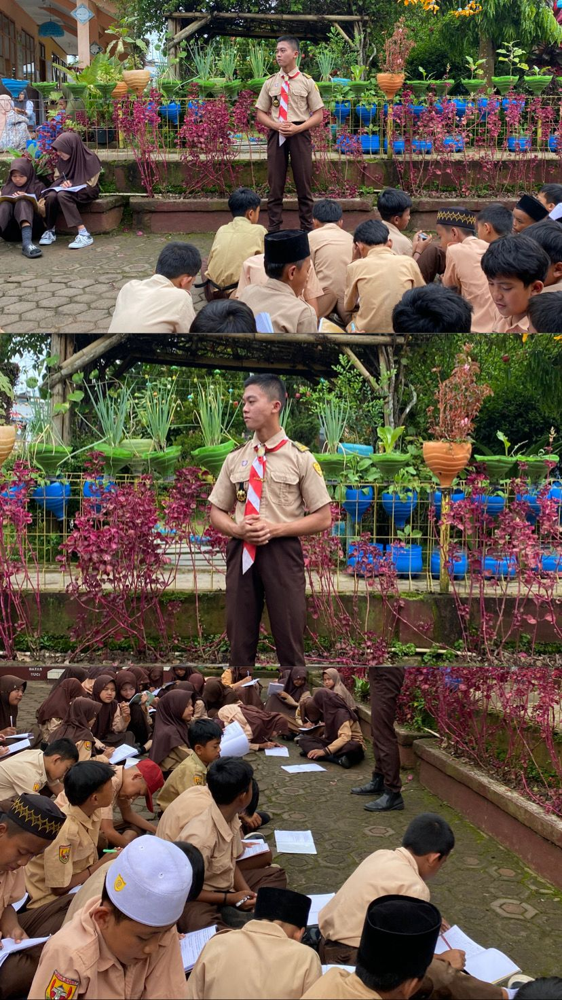

Selamat datang di DKR Leuwigoong
Situs resmi Dewan Kerja Ranting Leuwigoong—wadah kreatif, inspiratif, dan penuh semangat bagi generasi muda pramuka.
Lihat ProfilSitus resmi Dewan Kerja Ranting Leuwigoong—wadah kreatif, inspiratif, dan penuh semangat bagi generasi muda pramuka.
Lihat ProfilDewan Kerja Pramuka Penegak dan Pramuka Pandega yang selanjutnya disingkat Dewan Kerja adalah wadah pembinaan dan pengembangan kaderisasi kepemimpinan di tingkat Kwartir yang beranggotakan Pramuka Penegak dan Pramuka Pandega Putri Putra, sebagai bagian integral dari Kwartir dan berkedudukan sebagai badan kelengkapan Kwartir yang diberi wewenang dan kepercayaan untuk mengelola pembinaan dan kegiatan Pramuka Penegak dan Pramuka Pandega sesuai prinsip "dari, oleh dan untuk Pramuka Penegak dan Pramuka Pandega dengan bimbingan orang dewasa", yang pengelolaannya bersifat kolektif dan kolegial.
Satyaku kudharmakan, Dharmaku kubaktikan.

Ketua

Wakil Ketua

Sekretaris
Sekretaris II
Bendahara
Bendahara II
Ketua Bidang Kajian
Anggota Bidang Kajian
Anggota Bidang Kajian
Anggota Bidang Kajian
Ketua Bidang Pembinaan & Pengembangan
Anggota Bidang Pembinaan & Pengembangan
Anggota Bidang Pembinaan & Pengembangan

Anggota Bidang Pembinaan & Pengembangan
Ketua Bidang Giat
Anggota Bidang Giat
Anggota Bidang Giat
Anggota Bidang Giat
Ketua Bidang Penelitian & Evaluasi
Anggota Bidang Penelitian & Evaluasi
Anggota Bidang Penelitian & Evaluasi
Anggota Bidang Penelitian & Evaluasi
Jabatan
Berikut beberapa kegiatan resmi DKR Leuwigoong.

Kegiatan untuk meningkatkan hubungan antar pramuka di seluruh dunia.

Partisipasi dalam kegiatan Musyawarah Pramuka Penegak Pandega Putri Putra yang diselenggarakan DKC Garut Tahun 2025.

Mengikuti kegiatan upacara Hut Pramuka ke 64 tahun sekaligus memeriahkan Festival hari pramuka.
Informasi terbaru seputar kegiatan, pengumuman, dan agenda resmi Dewan Kerja Ranting Leuwigoong.
Dokumentasi kegiatan DKR Leuwigoong.


 



Hubungi kami untuk informasi lebih lanjut atau kerja sama kegiatan.